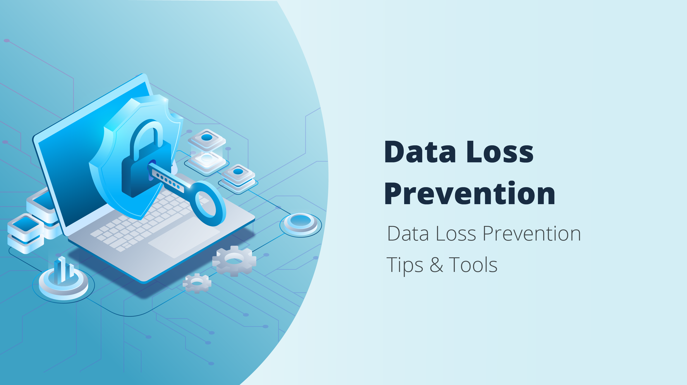

OUR CORE SERVICES
-
Penetration testing
A penetration test (pen test) is an authorized simulated attack performed on a computer system to evaluate its security.Our penetration testers use the same tools, techniques, and processes as attackers to find and demonstrate the business impacts of weaknesses in a system.
-
Network security
Network security is the protection of the underlying networking infrastructure from unauthorized access, misuse, or theft.We ensure full protection.
-
Ethical hacking
The authorized attempt to gain access to computer systems, applications or data by duplicating the strategies and methods that would be used by a malicious hacker.
-
Firewalls
Windows Firewall Control is a powerful tool which extends the functionality of Windows Firewall by adding outbound notifications and many other features.
-
Data loss prevention(DLP)
Data Loss Prevention (DLP) is the practice of detecting and preventing data breaches, exfiltration, or unwanted destruction of sensitive data.
-
Email security
the practice of protecting email accounts and communications from unauthorized access, loss, or compromise
(Pen test)
a security exercise where a cyber-security expert attempts to find and exploit vulnerabilities in a computer system
(network security)

a set of technologies that protects the usability and integrity of a company's infrastructure by preventing the entry or proliferation within a network of a wide variety of potential threats.
legal hackers and testers

Our hackers perfom the ethical hacking to check any leakages on the system.
cotrolled firewall operations
Qualified personel create,control and maintain firewalls to avoid breaking in of hackers.
dlp
Back up your files. Protect your hardware. Educate your employees about data leakage. Keep your computer clean. Apply antivirus and anti-malware software. Ensure sensitive data is encrypted. Keep software patches up-to-date. Develop robust security policies for devices and endpoints.
email security

Anti-virus. While spam filters can separate spam messages from regular mail and delete them eventually, this will take time and encryption.
Spam filters. A substantial proportion of emails received by businesses are marketing devices. ...